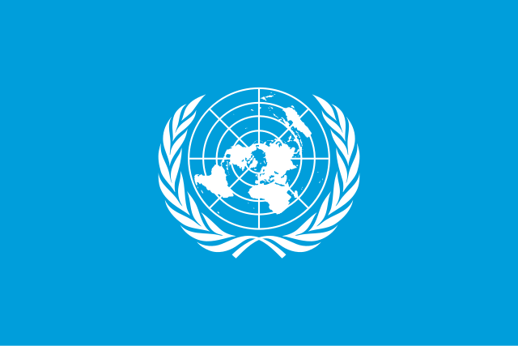

Dari namanya, bilateral, kata 'bi' diambil dari bahasa inggris mengartikan dua. Dengan kata lain kerja sama bilateral merupakan hubungan saling menguntungkan antara dua negara untuk mencapai tujuan bersama yang telah disepakati. Kerja sama ini biasanya tercantum dalam perjanjian bilateral atau nota kesepahaman (MoU). Menurut Kompas.com, tujuan utama Terbentuknya kolaborasi antara dua negara ini biasanya berhubungan dengan perdamaian, peningkatan kesejahteraan, dan lain-lain.
Sumber: www.kompas.com, diakses 28 November 2024 pukul 23.39 WIBHubungan timbal balik antara lebih dari dua negara pada suatu kawasan untuk mencapai suatu tujuan bersama. Kerja sama ini memprioritaskan kepentingan nasional setiap negara-negara yang terlibat. Terbentuknya kerja sama pada kawasan tertentu cenderung karena jaraknya yang dekat, latar belakang budaya atau sejarahnya yang tidak jauh berbeda, atau kepentingan lainnya dari pihak-pihak yang terlibat. Salah satu contoh organisasi kerja sama Regional dimana Indonesia aktif adalah ASEAN (Assosiation of South East Asian Nations)
Sumber: www.cnnindonesia.com/edukasi/20240530101119-569-1103635/pengertian-manfaat-dan-contoh-kerja-sama-regional, diakses 29 November 2024 pukul 00.06 WIBHubungan antara tiga negara atau lebih untuk mencapai tujuan bersama terutama seperti menghadapi isu-isu global. Jumlah negara yang terlibat dalam jenis kerja sama ini cenderung lebih banyak dan mendunia karena tidak adanya perbatasan kawasan atau wilayah. Selain itu, anggotanya pun juga bisa beragam sekali atau masih terdapat beberapa kemiripan. Kerja sama multilateral yang seringkali kita ketahui pastinya berbentuk sebuah organisasi besar, contoh sederhananya PBB (Perserikatan Bangsa-Bangsa), WTO (World Trade Organization), WHO (World Health Organization), dan OPEC (Organization of Petroleum Exporting Countries).
Sumber: https://www.liputan6.com/feeds/read/5783864/apa-itu-kerjasama-multilateral-pengertian-manfaat-dan-contohnya, diakses 29 November 2024 pukul 00.15 WIB 